En esta ocasión aprenderás algunos de los comandos básicos de Git, así como algunos comandos de Linux.
Solo para los usuarios de Windows
1. Descarga el software Putty de aquí: http://the.earth.li/~sgtatham/putty/latest/x86/putty.exe
2. Al abrir putty verás la siguiente pantalla:
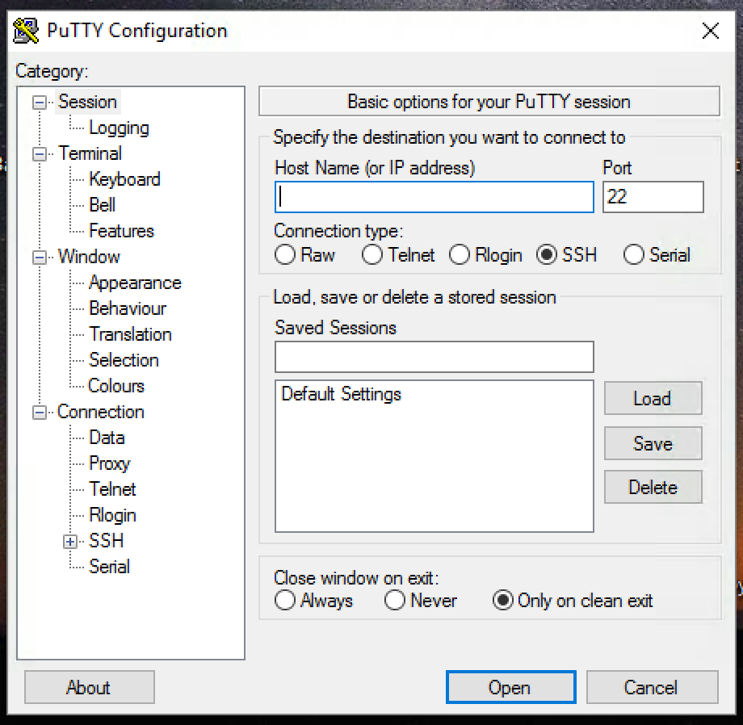
3. Coloca la IP 104.131.130.64 en el campo de Host Name
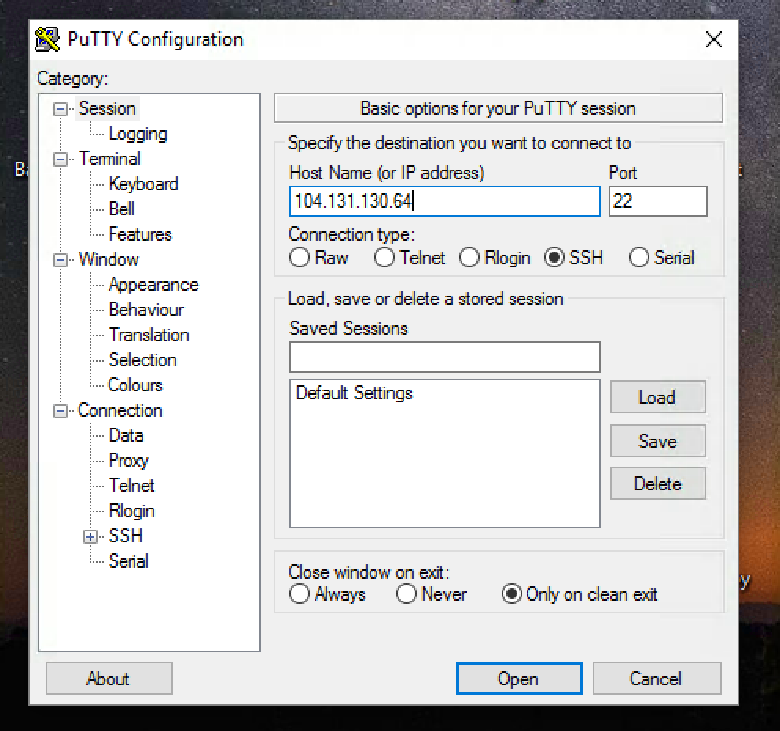
4. El sistema te pedirá que aceptes la conexión con el servidor, da click en Si.
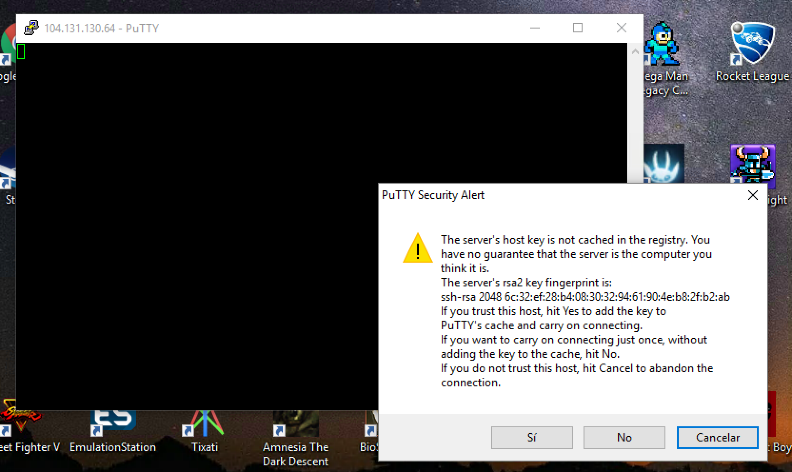
5. Posteriormente coloca como nombre de usuario tu matrícula
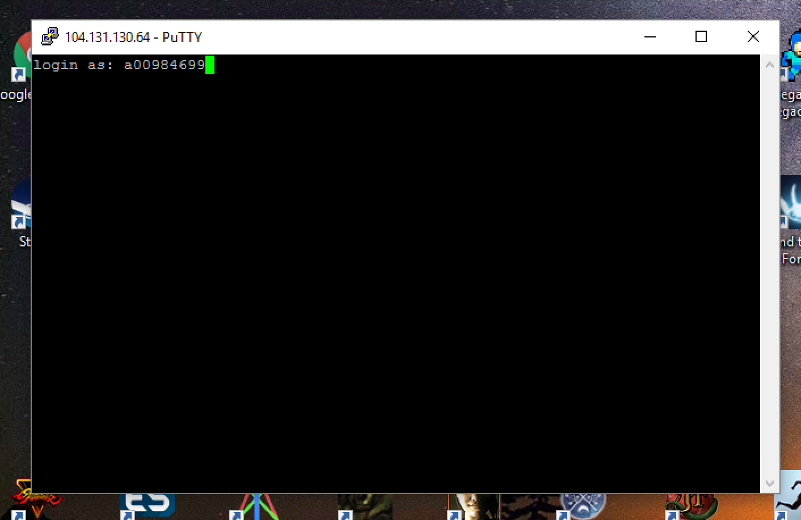
6. El sistema te pedirá que ingreses tu contraseña, la contraseña que tienes asignada son los digitos después del 0 de tu matrícula, por ejemplo, si tu matrícula es a00984699, tu contraseña es 984699, si tu matrícula es a01984699 entonces tu contraseña es 1984699.
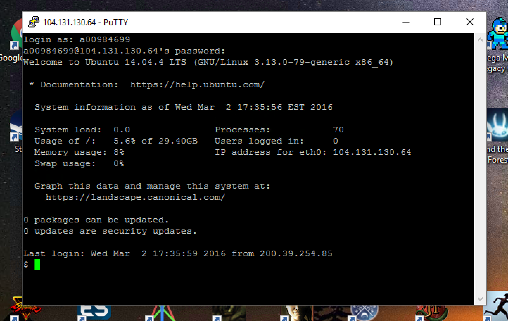
Ahora continúa desde el paso 3 de la siguiente sección. Para los siguientes pasos cuando veas $ significa que la instrucción se escribe en la consola (la ventana negra que tienes abierta).
Termina la parte de los usuarios de Windows
0. Para los siguientes pasos cuando veas $ significa que la instrucción se escribe en la consola.
1. El primer paso consiste en iniciar sesión en la consola, si tienes una computadora con Mac OS X puedes hacerlo abriendo la aplicación "Terminal" (la app viene instalada de fábrica) o si usas Linux solo abre la terminal, dentro de la consola escribe el siguiente comando. Tienes que sustituir [tu-matricula] por tu matrícula en minúsculas.
Por ejemplo, suponiendo que tu matrícula es B00984799 entonces el comando quedaría como:
2. El sistema te pedirá que ingreses tu contraseña, la contraseña que tienes asignada son los digitos después del 0 de tu matrícula, por ejemplo, si tu matrícula es a00984699, tu contraseña es 984699, si tu matrícula es a01984699 entonces tu contraseña es 1984699.
3. Una vez que estes a dentro del sistema, revisa el directorio en el que te encuentras, esto puedes hacerlo con el comando pwd:
4. Crea un directorio con el nombre de hola_mundo_tutorial para hacerlo utiliza el comando mkdir.
5. Verifica que el directorio se creó utilizando el comando ls con el parámetro -l.
6. Navega al directorio hola_mundo_tutorial, para hacerlo utiliza el comando cd.
7. Crea un archivo de texto, para esto puedes ocupar la aplicacion nano.
8. La aplicación nano se abre en la consola, en la primera línea escribe tú matrícula.
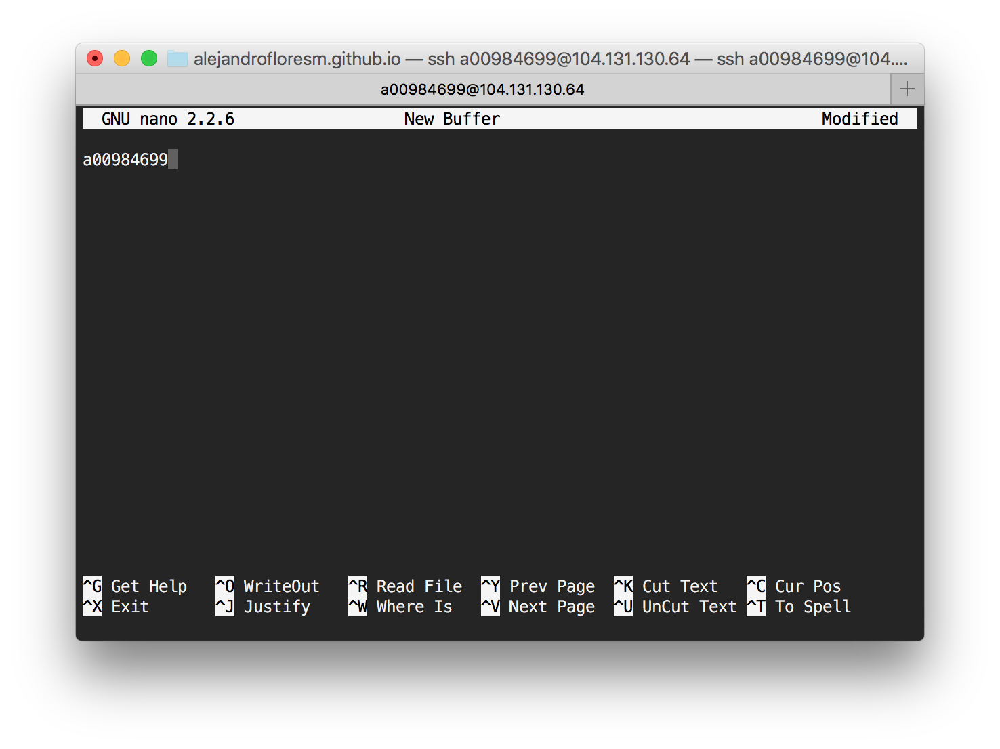
9. Una vez que hayas escrito tu matrícula, presiona Ctrl + o, Nota: se tiene que presionar la tecla Ctrl independientemente si estás en Mac OS X o Windows.
10. Nano te pedirá que pongas un nombre al archivo, colocale el nombre de hola_mundo.txt y presiona enter.
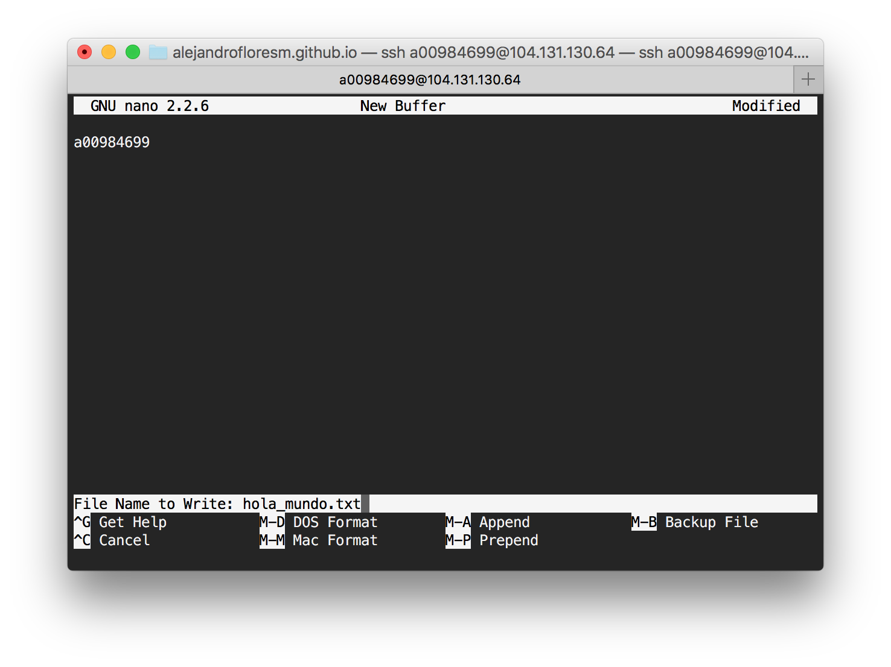
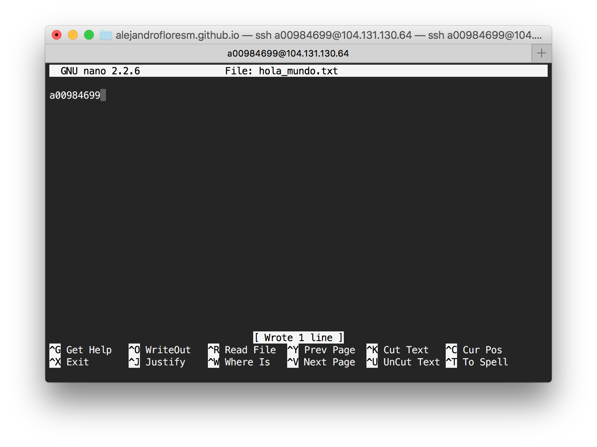
10. Finalmente presiona Ctrl + x para salir de Nano.
11. Si listas los archivos (ls -l) podrás ver que se ha creado el archivo hola_mundo.txt
12. Ahora vamos a indicar que esta carpeta es un repositorio git, para hacerlo hay que ejecutar el comando git init esto creará una carpeta escondida con el nombre de .git, el tener la carpeta .git es suficiente para que git pueda identificar que ahí se encuentra un repositorio, de ahora en adelante todos los archivos y subcarpetas que se agreguen a esta carpeta (hola_mundo_tutorial) podrán agregarse al sistema de versiones.
13. Si listas los archivos ocultos de la carpeta (ls -la) podrás ver que se ha creado la carpeta .git.
14. Ahora vamos agregar el documento que creamos al primer commit de nuestro repositorio. Un commit es un conjunto de cambios en el repositorio. Lo que nosotros vamos a hacer es indicarle a git que agregué este archivo al conjunto de cambios.
Para agregar el archivo utilizamos el comando git add [nombre de archivo]
15. Ahora que ya lo tenemos agregado al conjunto de cambios revisemos cual es el estatus de git, para esto podemos utilizar el comando git status.
Observa que se menciona que se ha agregado un nuevo archivo.
16. Ahora le indicaremos al sistema que haga el commit, anteriormente solamente le habíamos señalado qué se iba agregar al commit, sin embargo este aún no se ha creado.
17. Para agregar el primer commit utiliza el comando git commit con el parámetro -m "texto de descripción del commit".
18. El sistema te indicará que falta definir el correo electrónico y tu nombre, para hacerlo ejecuta los comandos git config --global user.email "Tu correo@correo.com" y git config --global user.name "Tu nombre". No olvides que tienes que colocar tu correo electrónico y tu nombre, puedes usar el correo que quieras, por ejemplo:
19. Ahora vuelve a intentar el commit y ya no tendrás problemas.
20. Si ejecutas el comando git status verás que no tienes ningún cambio pendiente.
a. Abre de nuevo el documento hola_mundo.txt, puedes usar el comando nano hola_mundo.txt y debajo de tu matrícula coloca tu nombre y guarda el documento.
b. Agrega el documento al commit.
c. Realiza el commit, no olvides colocar un mensaje descriptivo dentro de los valores del parámetro -m.
21. Para ver todos los commits que hemos realizados se puede utilizar el comando git log.
22. Ahora vamos a subir nuestro repositorio a github.com, para hacerlo tenemos que agregar nuestras llaves de SSH a github.
23. Para generar la llave ejecuta el siguiente comando ssh-keygen -t rsa -b 4096 -C "your_email@example.com", no olvides sustituir tu correo. En cada entrada de información presiona la tecla Enter, esto le asignará el valor predeterminado.
24. Ahora verificaremos que se está ejecutando el proceso ssh-agent:
25. Agregamos la llave a nuestro llavero del sistema, para hacerlo ejecuta el siguiente comando:
26. Posteriormente, muestra el contenido de la llave pública, esto lo puedes hacer con el comando more:
27. Copia ese contenido con el cursor de tu computadora.
28. Ahora en nuestro sistema entramos a github.com, nos vamos a Settings > SSH Keys (o aquí), selecciona New SSH Key.
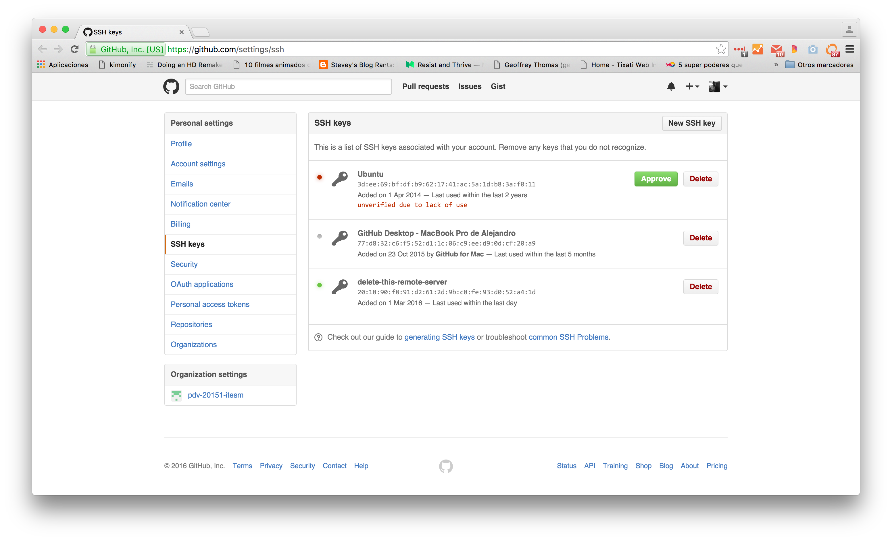
29. De título ponle Servidor remoto y en el campo de key coloca el contenido de tu llave pública:
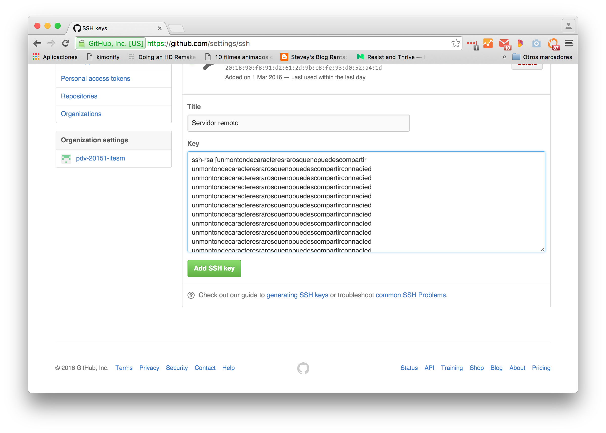
30. Finalmente presiona el botón Add SSH Key, te pedirá tu contraseña de nuevo, coloca tu contraseña y ahora podrás ver tu llave listada.
31. Ahora en github.com crea un nuevo repositorio, ponle de nombre hola_mundo_tutorial.
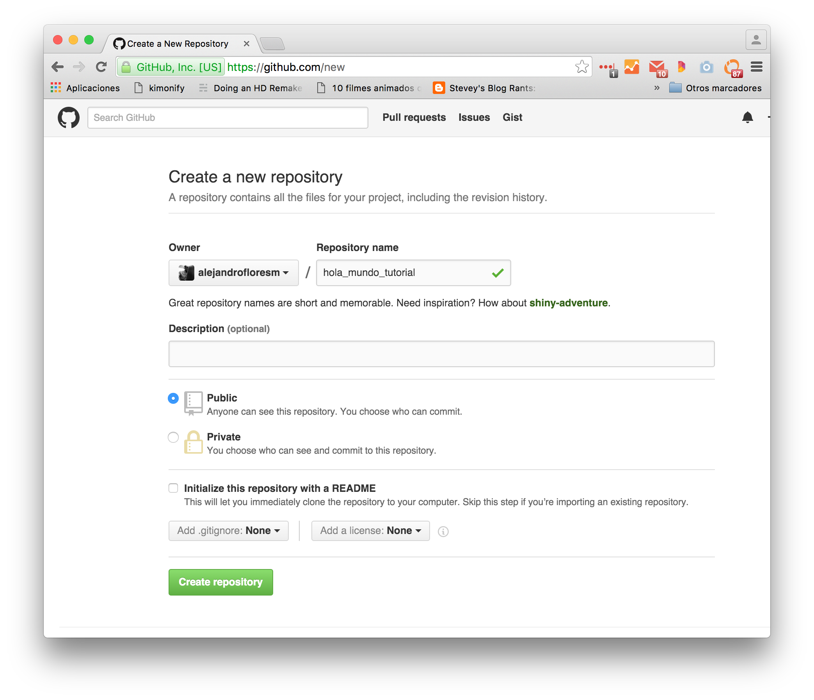
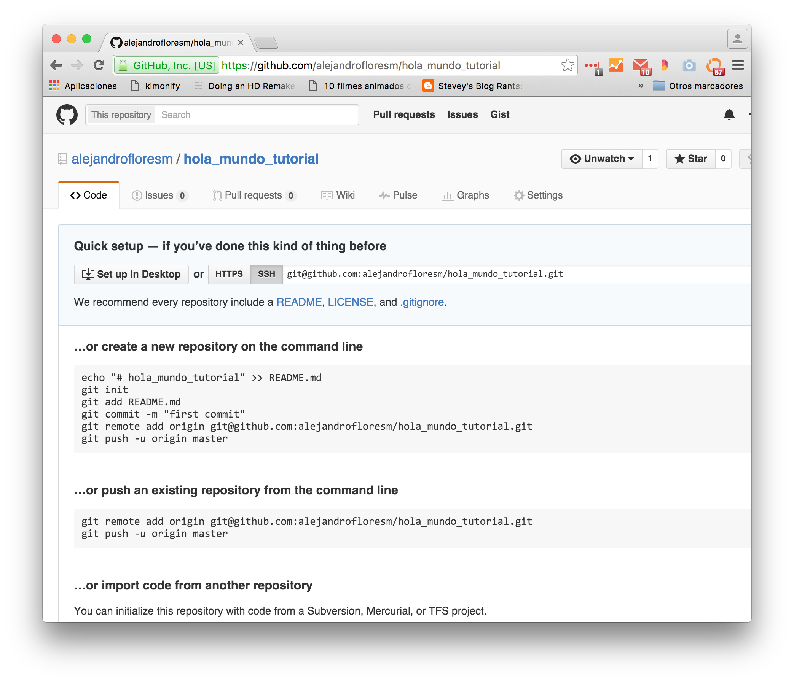
32. Una vez que se ha creado el repositorio notarás que la pantalla de github.com te ofrece un par de opciones para subir tus datos, en la sección que dice …or push an existing repository from the command line, copia cada una de los comandos y ejecútalos.
33. Finalmente, entra al repositorio en github.com y verás que tus cambios ya están disponibles.
34. Entra al repositorio en github.com, selecciona el archivo hola_mundo.txt y posteriormente da click en el lápiz para que puedas realizar una edición, borra la línea con tu nombre y coloca en esa línea la carrera a la que perteneces.
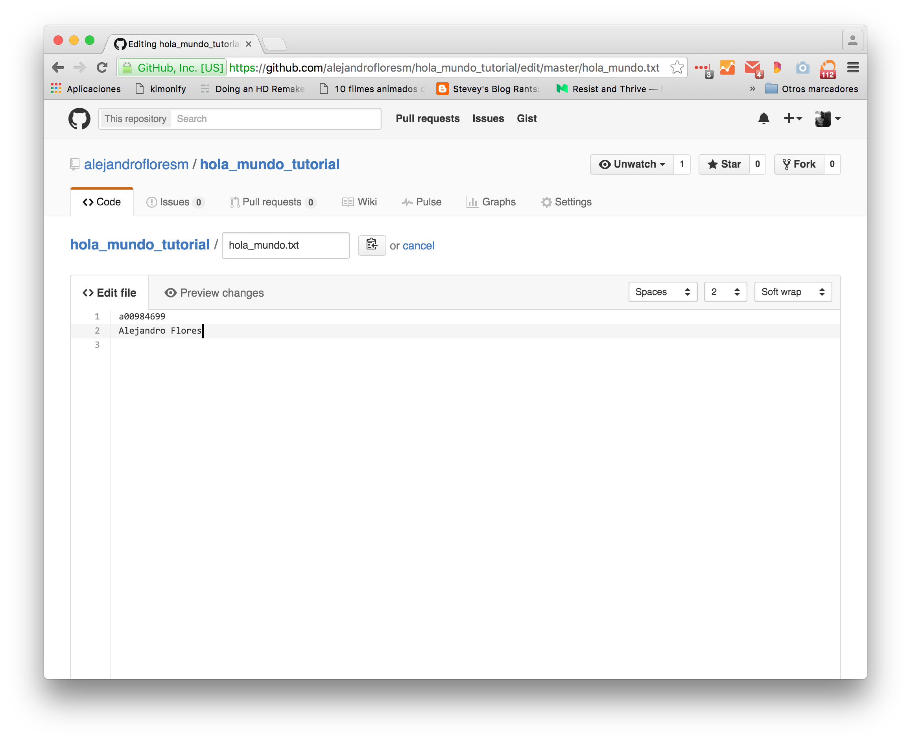
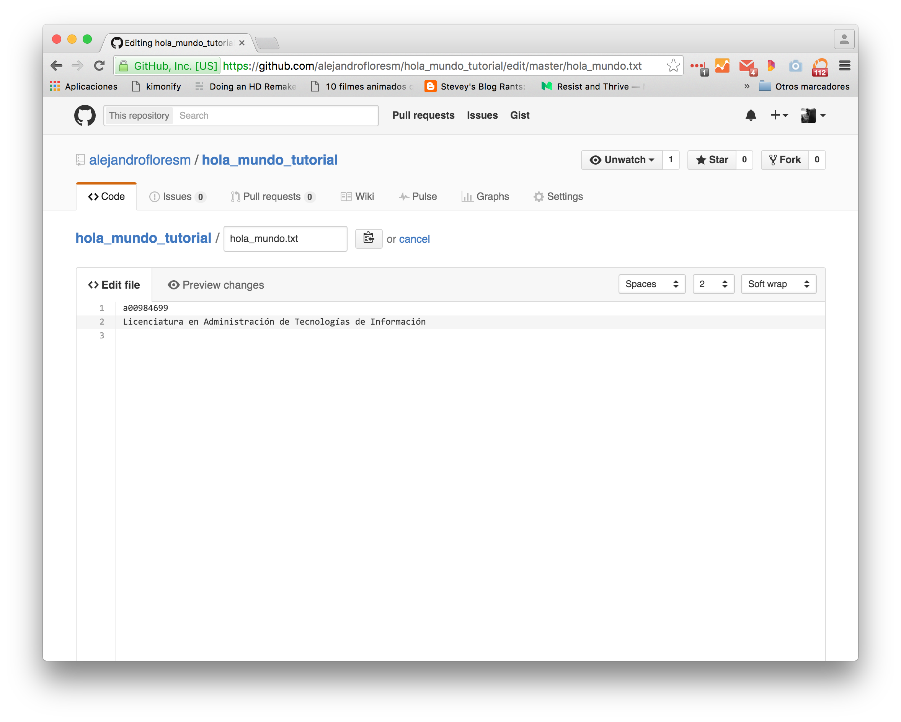
35. En la parte inferior dale click en Commit. Lo que has realizado es una modificación en el repositorio origen.
36. En la línea de comandos, abre de nuevo el archivo hola_mundo.txt y coloca debajo de tu nombre tu película favorita.
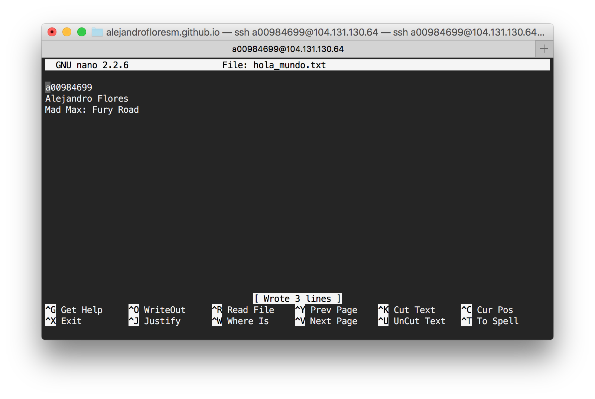
37. Agrega el archivo a tus cambios en git (git add) y finalmente realiza un commit (git commit -m "").
38. Sube tus cambios al repositorio en github.com, esto lo puedes hacer con el siguiente comando git push origin master.
39. El sistema no te deja subir los cambios debido a que el repositorio de origen (github.com) se encuentra una versión adelante que la tuya, por lo tanto primero tienes que descargar sus cambios y después subir los tuyos.
40. Para descargar los cambios utiliza el comando git pull.
El sistema te marca que ha habido un conflicto y que no se pudo resolver, para resolver el conflicto tenemos que modificar el archivo con el conflicto.
41. Abre el archivo hola_mundo.txt, podrás ver que tiene un contenido similar a este:
Lo que está entre <<<<<<< HEAD y ======= es lo que tienes almacenado en tu repositorio local.
Mientras lo que está entre ======= y >>>>>>> d97760afddb7e6ec13c49d34c3ea9790cbb95ff9 es lo que está almacenado en el repositorio origen (en este caso, nuestro repositorio origen es lo que está guardado en github.com).
Git no conoce cuál es la línea correcta, ya sea si la que está en tu repositorio local o bien la de tu repositorio origen, por lo tanto, el trabajo queda en manos de desarrollador.
En este caso queremos que el documento tenga lo siguiente: 1. Matrícula, 2. Nombre, 3. Carrera y 4. Película favorita.
42. Modifica el documento para que coincida con el requerimiento anterior, recuerda que tienes que eliminar las líneas: <<<<<<< HEAD, ======= y >>>>>>> d97760afddb7e6ec13c49d34c3ea9790cbb95ff9.
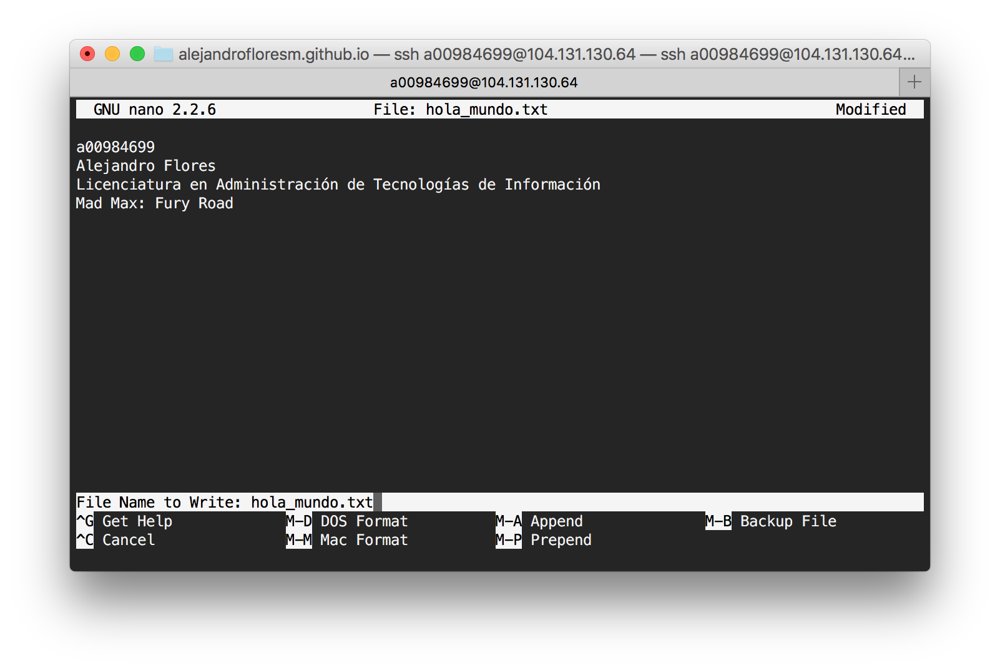
43. Una vez que has almacenado el documento correcto, agrega el archivo a tus cambios en git (git add) y finalmente realiza el commit (git commit -m "").
44. Intenta subir de nuevo tus cambios git push origin master.
45. Entra a tu repositorio en github.com y podrás ver las modificaciones realizadas.